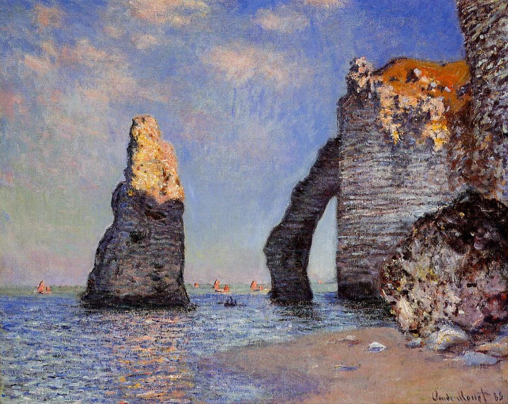

Tags: Normandy, cliffs-and-rocks
Style: Impressionism
Artist: Monet Claude
Title: The Rock Needle and the Porte d'Aval
Year: 1885
Genre: landscape
Categories: castle (41.9%); jigsaw_puzzle (16.7%); megalith (15.3%); cliff (7.8%); fountain (5.1%)